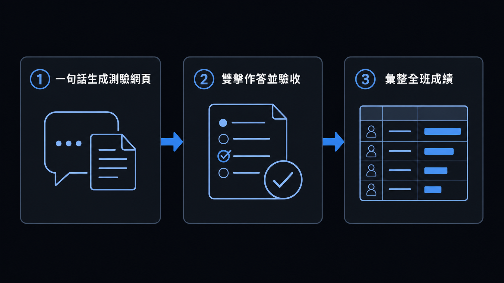

Module 2 教學帶你把考古題 PDF 變成「一題一張乾淨圖片 ＋ 標準答案 JSON」的問題集資料夾。Module 3 接著從零開始，帶你一步一步跟 Codex 一起設計並打造一套等效的工具，弄懂每個環節在做什麼。如果你還沒走完 Module 3、或當時卡在某個步驟沒跟上，這份教學是給你的快速版：只用一句話請 Codex 套用工作坊講師事先寫好的 build-quiz-app 這個 custom skill（放在 .agents/skills/ 資料夾底下，不是 Codex 原生內建的功能），直接生成一個不用架站、雙擊就能打開的學生自我測驗網頁，外加教師端成績彙整頁 不需要自己讀分析報告，也不需要手動寫 config.json。
本教學對應 module4/ 資料夾，內容跟 Module 3 的 module3/ 完全對應（同一組範例問題集，也已經有兩份跑好可以直接打開玩的成品）；差別只在教學方式：Module 3 帶你逐步拆解每個步驟，這裡只示範「一句話生成」這個最短路徑。

| 範例測驗 | 問題集資料夾（輸入） | config.json 的 examLabel | 雙擊即用成品（輸出） |
|---|---|---|---|
| 114 學年度 電機與電子群資電類 專業科目(一)(二)，共 100 題 | module4/repo/114/ | Formative_Assessment_114 | module4/app/dist/Formative_Assessment_114_quiz.html（約 15 MB） |
| 115 學年度 數學(A) 共同科目，共 25 題 | module4/repo/math-115a/ | Formative_Assessment_115_MathA | module4/app/dist/Formative_Assessment_115_MathA_quiz.html（約 2.6 MB） |
module4/raw/math-115c/ 底下還有第三組資料（115 學年度數學(C)）已經下載好、但還沒切題清理，留給本教學「動手做」單元練習一次從頭到尾的最短路徑。
做完這份教學，你應該能夠：
build-quiz-app 內部怎麼運作，只靠一句自然語言指令，把 Module 2 產出的問題集資料夾變成雙擊即可開啟的自我測驗網頁。app/，不會動到已經做好的其他測驗。*.png 圖片 ＋ keys.json」的問題集資料夾。本教學沿用 module4/repo/114、module4/repo/math-115a 這兩組已經做好的資料當範例。這份教學刻意省略 Module 3 教的「找路徑、跑分析、寫 config.json、打包、驗收、交付」六個步驟細節。這些步驟依然會在背後被執行，只是全部交給 Codex 一次做完；Codex 不像 Claude Code 那樣會自動偵測專案裡有哪些 skill 可以用，所以下面的提示語會直接講清楚工具放在.agents/skills/build-quiz-app/這個資料夾，讓 Codex 能直接找到並使用。如果你的專案裡還沒有.agents/這個資料夾，可以下載 module4-agents-skills.tar，解壓後把.agents/資料夾放到專案根目錄（跟module4/同一層）。如果想知道每一步實際在做什麼、或想手動調整設定，請見 Module 3。
把「找路徑、分析資料夾、寫設定、打包」這一整條流程，濃縮成一句話請 Codex 做：
請對 module4/repo/114 套用本專案內的 build-quiz-app skill。Codex 讀完說明後，會自己決定 app/ 要蓋在哪裡（跟 module4/repo/ 平級的 module4/app/）、自己跑分析、自己寫 config.json、自己打包，你不需要插手中間任何一步。看到 Codex 回報完成後，直接跳到下面「驗收重點」確認結果就可以了。
module4/app/dist/ 底下出現一個新的 <examLabel>_quiz.html 檔案，檔案大小大約是問題集圖片總大小的 1.37 倍（base64 編碼會讓檔案膨脹這麼多）；明顯小很多通常代表圖片沒被完整塞進去。keys.json 裡的題目數跟畫面上能抽到的題數應該吻合。學生在測驗頁面送出作答後，畫面上有一顆「下載成績單 (CSV)」按鈕，會把這次作答的逐題結果存成一個 CSV 檔。module4/app/report-aggregator.html（跟 Module 3 產出的是同一份引擎）就是給老師用來把全班這些 CSV 檔合併起來看的工具 一樣雙擊即可開啟，不需要架站、不會把資料上傳到網路上。把收到的 CSV 檔拖曳到頁面上的拖放區，就會自動彙整出每位學生的成績、跟每一題全班的答對率。
module4/raw/math-115c/ 底下已經有 115 學年度數學(C) 的試題與標準答案 PDF，但還沒切題、也還沒清理。這是一個從頭走一次「Module 2 切題清理 → 一句話生成」全流程、疊加成 module4/app/ 第三份測驗的練習 一樣全程只需要跟 Codex 對話。
共同科目通常是 25 題，記得跟 Codex 說清楚題數跟科目代號：
請幫我把 module4/raw/math-115c 底下的 115 學年度數學(C) 試題 PDF 切成一題一張圖片，
這科是共同科目，只有 25 題，科目代號用 C。
輸出檔名請直接用 115數學CQ<題號>.png（不要用預設帶的「專業」字樣），
再對照標準答案 PDF 做出 keys.json，key 要跟檔名一致（含 .png），存到 module4/repo/math-115c。切完之後，比照 Module 2 的清理步驟，請 Codex 對 module4/repo/math-115c 執行清理（記得先乾跑）：
對 module4/repo/math-115c 資料夾裡的每張 *.png：
1. 裁掉下面多餘的空白（含「以下空白」殘影），但不要裁到真正的內容。
2. 清掉題號，但 (A)(B)(C)(D) 選項不要動。
執行塗白之前，先「乾跑」一次，把每張圖偵測到的題號區塊印出來讓我看過，
確認每張圖都剛好抓到 1 個題號區塊之後，才正式塗白存檔。module4/repo/math-115c 這個問題集資料夾也做好了。
請用 .agents/skills/build-quiz-app/ 底下的工具，把它疊加成 module4/app/ 的第三份測驗，
不要動到原本已經做好的那兩份。Codex 會自己判斷 module4/app/ 已經存在，用「在既有 config.json 裡加一筆」而不是「整個重建」的方式處理。完成後 module4/app/config.json 應該有三筆 assessments，module4/app/dist/ 也應該多一個檔案，另外兩份既有測驗完全不受影響。驗收方式跟上面「驗收重點」一樣：雙擊打開、作答、送出。
大多數情況一句話就夠了；但下面這些狀況，回頭看 Module 3：從問題集資料夾產生自主測驗網頁實作教學 會清楚得多：
config.json 裡的欄位（例如 choiceLetters、每次作答預設抽幾題）。dist/*.html 跟 quiz.html／config.json 兩種產出的差別，或想在本機測試可編輯原始碼版本。之後每多一組問題集資料，重複「Module 2 切題清理 → 一句話疊加進 app/」這個循環就好，app/ 引擎本身不需要重建。
正式交給學生前，記得請 Codex 幫你確認清楚兩種產出的差別：dist/*.html 是要交出去的成品，雙擊即用；report-aggregator.html 是另外單獨交給老師的彙整工具，跟學生端的檔案是不同用途。
如果問題集內容是有版權疑慮的考古題（例如技專校院入學測驗中心的試題），交付雙擊即用的 HTML 之前，記得再次確認自己有沒有合法散布這些內容的權利。